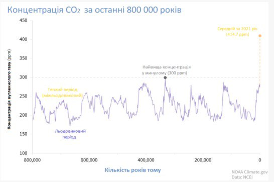
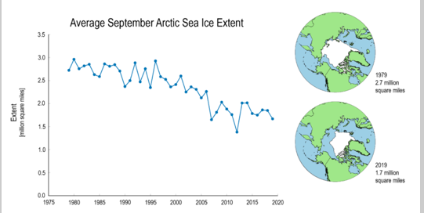
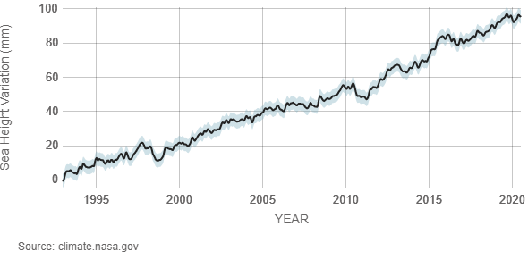
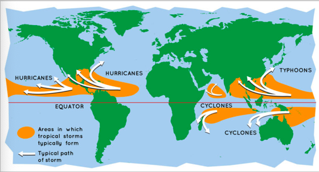

ЗМІНА КЛІМАТУ В УКРАЇНІ ТА СВІТІ: ПРИЧИНИ, НАСЛІДКИ ТА РІШЕННЯ ДЛЯ ПРОТИДІЇ
Клімат часто порівнюють з погодою, але між ними є різниця. Погода змінюється щодня – часом іде дощ, іноді настає спека або мороз. А клімат – це характер погодних умов протягом тривалого періоду для значної території. За всю історію існування Землі клімат змінювався багато разів. Вченим відомо про 7 льодовикових періодів, після яких завжди наступало потепління. Потепління в наш час – не лише природний процес, бо відбувається у 10 разів швидше, ніж будь-коли. Все частіше науковці вживають термін “кліматична криза” замість “зміни клімату”, щоб підкреслити серйозність цієї проблеми та потребу її вирішувати вже зараз. Кліматична криза – це надмірно стрімка зміна клімату “через” підвищення глобальної середньої температури. Щоб протидіяти кліматичній кризі, слід досягти вуглецевої нейтральності вже 2050 року та адаптуватися до змін клімату.
Причини зміни клімату
Парниковий ефект – це процес, за якого парникові гази затримують сонячну енергію на поверхні Землі та в атмосфері і перешкоджають її поверненню назад у космос. Парниковий ефект підтримує на Землі комфортну для життя температуру. Якби не було цього ефекту, то середня глобальна температура була б не +15℃, а -18℃. Парниковий ефект – це нормальне природне явище. Але після промислової революції з середини 19 ст. через спалювання викопного палива концентрація парникових газів в атмосфері почала різко зростати. До парникових газів відносять:
- Двоокис вуглецю СО2
- Метан CH4
- Оксид азоту(I) N2O
- Озон О3
- Водяна пара
Викиди парникових газів
Людство суттєво змінює концентрацію парникових газів в атмосфері, спалюючи викопне паливо: вугілля, нафту, газ тощо. Під час їх горіння вивільняється вуглець, який з’єднується з киснем у повітрі та утворює СО2. За останні 150 років концентрація СО2 зросла з 280 ppm (часток на мільйон) до більш ніж 400 ppm. Таке стрімке зростання вмісту СО2 в атмосфері сталося на планеті вперше за сотні тисяч років:
Науковці підтверджують: інші причини, хоча й мають місце, але вони не настільки впливові, як діяльність людини.
Глобальне потепління
Глобальна середня температураБ – це середнє значення всіх річних температур на Землі. Зазвичай дані обчислюються по регіонах за кожен день, а потім виводиться середнє арифметичне за рік для всієї планети. Різниця між річними показниками цих середніх температур і є те саме зростання (або падіння) середньої глобальної температури на Землі. Підвищення глобальної середньої температури на Землі означає, що спекотних днів у році стало більше, а холодних – менше. Це НЕ означає, що кожен день у порівнянні з відповідним днем року у доіндустріальну епоху став майже на 1 градус теплішим. Згідно зі спостереженнями, середня глобальна температура на Землі вже зросла на 1,1°С з 1880 року.Глобальне потепління відбувається нерівномірно по планеті. Середня температура в арктичних регіонах планети вже зросла на 2°С.
Танення льодовиків
Потепління в Арктиці відбувається вдвічі швидше у порівнянні з іншими регіонами планети. Тому льодовики тануть швидше. З 1979 року (перший повний рік супутникового спостереження) об’єм льоду в найтепліший сезон в Арктиці зменшився на 40%. За такої тенденції до середини століття в літний період Арктика буде без льоду.
Танення льодовиків має декілька серйозних наслідків.
Перший. Скорочується площа білого покриву, який відбиває від 20% до 50% сонячної радіації.
А площа
океану
збільшується та поглинає більше 95%. Так вода ще більше нагрівається і пришвидшує танення льодовиків,
призводячи
до більших змін клімату.
Другий.За підрахунками вчених з National Snow and Ice Data Center, вічна мерзлота утримує 1
400
гігатонн
вуглекислого газу – це майже вдвічі більше, ніж зараз містить атмосфера. Поки вічна мерзлота тане, вона
поступово вивільняє ці поклади газу. Разом із CO2 в атмосферу потрапляє Метан (СН4) – газ із парниковим
ефектом
у 84 рази сильнішим ніж СО2.

Третій. Підвищення рівня Світового океану. Вже зараз під водою
зникають
острови:
- Мальдіви
- Канарські острови
- Федеративні Штати Мікронезії
- Філіппіни
-
Соломонові острови
- вже втратили 5 островів через підняття рівня океану
- Сейшельські Острови
- Маршаллові острови
У розділі про зміну клімату в Україні описано, як підняття рівня світового океану вплине на нашу державу та які зони є найбільш вразливими. На графіках нижче видно, як зростав рівень світового океану 1870 року по 2020 рік.
Зміни в опадах
Підвищення температури збільшує випаровування та спричиняє перерозподіл вологи. Як наслідок, в одних регіонах випаровується надмірна кількість вологи та посилюється посуха. В інших регіонах ця волога конденсується, і там частішають зливи та шторми, що викликає ризики затоплення. Частіші й більш інтенсивні шторми В залежності від походження штормів розрізняють урагани, тайфуни та циклон. 